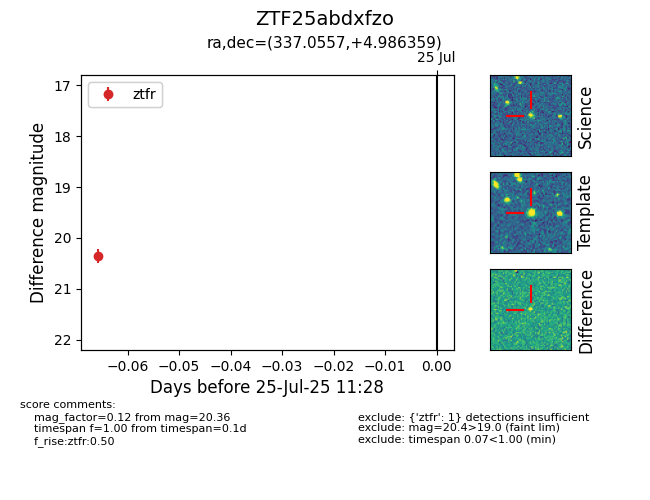

Target ZTF25abdxfzo at 2025-07-25 11:28, see:
FINK: fink-portal.org/ZTF25abdxfzo
Lasair: lasair-ztf.lsst.ac.uk/objects/ZTF25abdxfzo
ALeRCE: alerce.online/object/ZTF25abdxfzo
alt names
ZTF25abdxfzo (ztf,fink)
coordinates:
equatorial (ra, dec) = (337.0557,+4.98636)
galactic (l, b) = (70.3437,-42.79972)
photometry
last ztfr=20.36
1 ztfr detections
